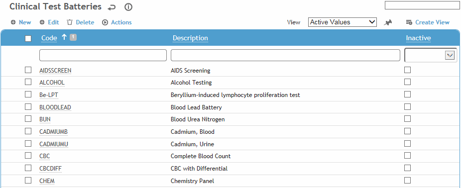
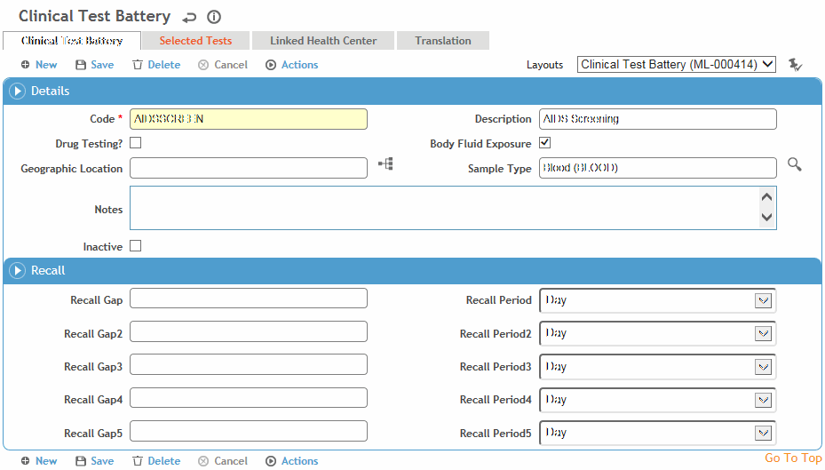

To filter the list of records, enter a few characters in one or more of the fields at the top followed by an asterisk, then press enter.

Click a link to open a clinical test battery, or click New.

Enter the Code and a Description for the clinical test battery.
If the test is to be used in the Drug Testing module, select Drug Testing.
If this will be given or used as part of the Body Fluid Exposure module, select the Body Fluid Exposure checkbox. The Recall fields become enabled; based on the date the first test is administered, enter up to five recalls in the Gap and Period fields (for example, 3 days, 6 months, etc.). These recalls will display on the Clinical Test Sample Batteries form only when tests are added via the Body Fluid Exposure module.
Only test batteries with this checkbox selected are available when adding a clinical test battery via the Body Fluid Exposure module.
To assign tests to this battery, click the “add” shortcut icon  (see Adding New Records) on the Selected Tests tab and choose a test (from the ClinicalTestUnit table).
(see Adding New Records) on the Selected Tests tab and choose a test (from the ClinicalTestUnit table).
To link the battery with a particular health center, click New on the Linked Health Center tab, and choose the health center. If the “Pre-filter picklists by default Health Center” system setting is turned on, the picklist for this table will display all values linked to this Health Center AND any values that are not linked to any Health Center.
Click Save.